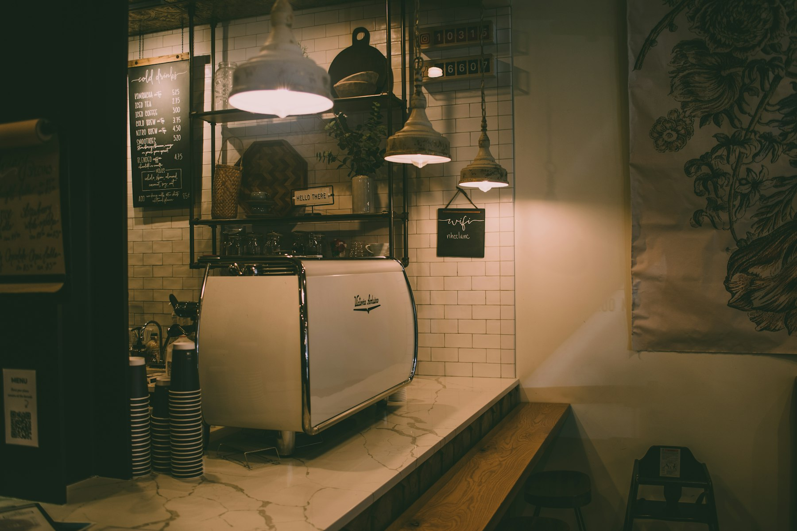
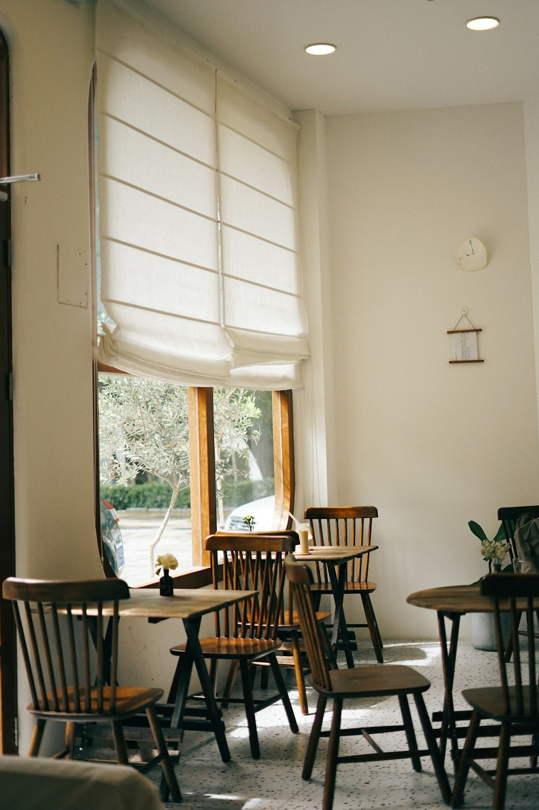
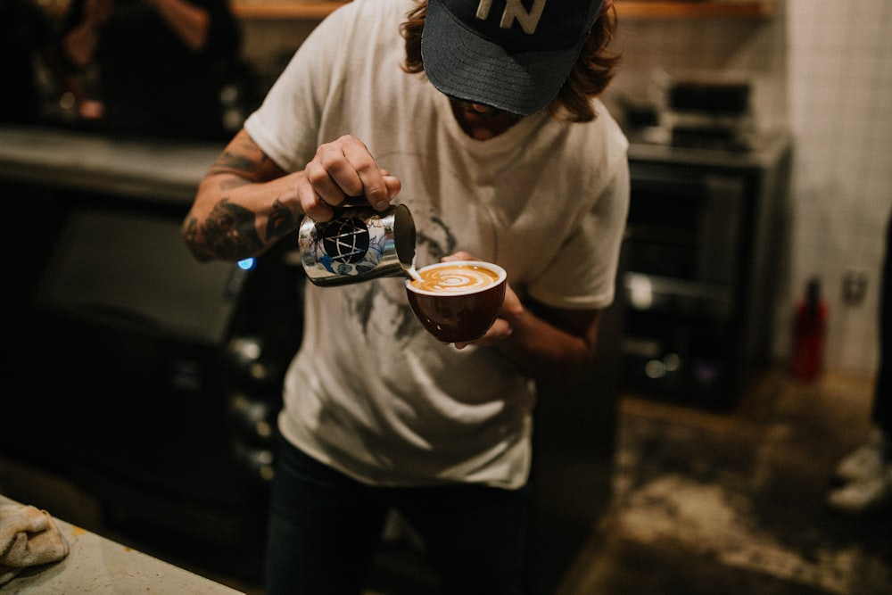

Origin
커피를 못 마시는 사람이
연 커피숍입니다.
예전에 일주일에 몇 번씩 가던 카페가 있었습니다. 커피 때문에 간 게 아니었습니다.
거기엔 사장이 직접 굴리는 영어 스터디가 있었습니다. 스터디가 없는 날에도 가고 싶었습니다. 그 사람이 늘 거기 있었으니까요.
그래서 여기도 음료를 파는 곳이 아니라, 사람이 사람을 부르는 자리로 만들었습니다.
Low Voice
목소리를 낮추면,
더 많은 게 들립니다.
커피보다 사람이 먼저인 카페.
연남동 골목 2층, 바 여덟 자리.

연남로 12길 8, 2층
경의선숲길 3번 출구에서 6분.
1층 세탁소 옆 계단으로.
화 – 일 · 11:00–21:00
월요일은 로스팅 날이라 쉽니다. 라스트 오더 20:30.
가장 조용한 시간은 평일 오후 세 시에서 다섯 시 사이입니다.
4인 이상 안 받습니다
예약도, 대관도 받지 않습니다.
통화는 밖에서 부탁드립니다.
Origin
예전에 일주일에 몇 번씩 가던 카페가 있었습니다. 커피 때문에 간 게 아니었습니다.
거기엔 사장이 직접 굴리는 영어 스터디가 있었습니다. 스터디가 없는 날에도 가고 싶었습니다. 그 사람이 늘 거기 있었으니까요.
그래서 여기도 음료를 파는 곳이 아니라, 사람이 사람을 부르는 자리로 만들었습니다.
Stories
단골 중 한 사람은 호주에서 온 제이슨입니다. 본인도 카페를 하고, 그 가게도 잘됩니다. 그런데도 웃으며 이 문을 엽니다.
음료는 어디나 평균 이상입니다. 결국 공간이 좋아서 갑니다.
— 사장
같이 발전했으면 좋겠다면서, 아는 걸 전부 풀어놓던 분이었습니다.
— 사장이 배운 카페
단골은 음료를 사러 오는 사람이 아니라, 사람들 사이에 앉으러 오는 사람입니다.
— 제이슨을 보며
Atmosphere
쨍한 백색 조명 대신 전구색. 팝송 대신 잔잔한 연주곡.
목소리는 끊이지 않지만, 아무도 소리를 높이지 않습니다. 그 균형이 이 가게의 기술입니다.

바테이블계산대가 아니라 바가 먼저 보입니다. 이 가게가 뭘로 굴러가는지 3초면 압니다.
바 안쪽옆에 앉는 대신 마주 봅니다. 늘 거기 있습니다.
커피사장은 못 마시지만, 월요일마다 직접 볶습니다.
바 8석, 2인 테이블 4개골목 안 2층. 계단이 첫 번째 필터입니다. 4인 테이블은 아예 없습니다.
Notice
고요함을 지키기 위한, 이기적이고 단호한 규칙입니다. 혼자, 둘, 셋이서 속삭이는 대화만 환영합니다.
“저희 가게 4인 이상 안 받습니다.”
“죄송한데 단체손님 불가예요.”
딱 자르되, 미안한 마음은 담아서 말씀드리겠습니다.
Moments




오시면, 바 안쪽에 있겠습니다.